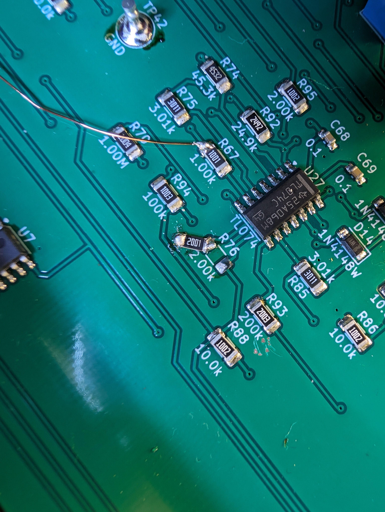
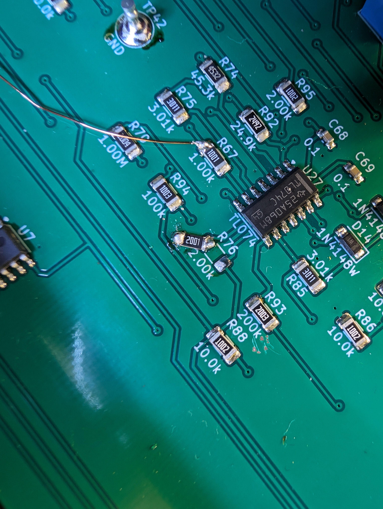

Completed on: 2024-06-03


In the first image we can see the bare PCBs as my roommate is putting a new component on. We also ordered a PCB stencil to speed up the process which allowed us to spread ChipQuick and place the small SMA components to be soldered via a heatgun. The through-hole components of course had to be manually soldered via a soldering iron. This took an extremely long amount of time considering we were making 5 identical boards which then had to be tested as well and troubleshot as you will see below.

 

Here we see a few examples of some of the more interesting fixes we needed to do due to layout errors. That's the price you pay for being the guinea pig, but I can still assure you that we got the better end of the deal ending up with 5 industry leading guassmeters as well as a wealth of new knowledge. The only unfortunate bit is that it took quite sometime to troubleshoot the errors but that simply highlights the importance of having a robust set of test points to test each stage of the design. So huge kudos to David and Brian for a logical board layout and for teaching us the ropes in narrowing down poor solder connections and layout errors.


In the first image we can see the probes we also had to make (sadly these are the only images of them I have before they were brought back to Brown so I apoligize). My roommate -- Shih-wei -- is holding them as we successfully end our final trip to MIT for this project (kind-of-not-really-we-came-back-to-fix-stuff). During this process, we also learned how to callibrate the guassmeters to achive the insane accuracy of 1ppm. This is done using a callibration magnet and then tuning the poteniometers governing the gain of the probe. The more difficult task is tuning the feedback circuit to work with our magnets at Brown versus the ones at MIT since we have a whole host of much smaller magnets and they were originally callibrated for soemthing with a much larger inductance. That being said we figured it out and all is well now. Enjoy the final photo of the guassmeters safe at Brown next to their power supplies before we put them to work.
Here we have a fun video showcasing the difficulties of building the Gaussmeters themselves and just how many parts there are on a single board. If your rather perceptive you can catch a glimpse of the reference (old) design made in Eagle before they moved the layout over to KiCAD.
This project is a collaboration with a very good mentor of mine up at MIT (David) who has been instrumental in getting our lab up and running (from fixing our power amplifiers to helping us build entirely new systems). This project is actually split into two seperate projects starting with the gaussmeter itself which features a redesign of Davids older analog gaussmeters of which we got to be the guinea pig of (spoiler we had to make some rather esoteric fixes to get it up and running). That being said, as I did NOT design the PCB for this project, I will refrain from posting schematics and the 3d models as I merely facilitated the ordering of the boards as well as the construction. In doing so, we had to make a few ad-hoc fixed to ultimately ensure smooth operation. This project was very time-consuming but extremely informative and I would like to thank David Bono and Brian Neltner for their mentoring and guidance. Also my roommate and labmate Shih-wei for actually suffering through the build process with me.
Sub-project -- Custom Probe -- Completed on: 2024-06-21
Above we can see the layout and the corresponding 3d model of the probe. This probe is designed to use a typical D-sub (15 pos) plug that will carry the signal from the Hall sensor to the gaussmeter itself. These provide a cheap and robust connection method that is tried and true.


Here we can see the size of the unprocessed probe as well as the final product working on the ST-FMR system providing accurate measurements and feedback control.
The second part of the project was one I undertook myself to solve some problems we were facing (actually in the ST-FMR dept). David was kind enough to give us already made PCB boards for the gaussmeter probes themselves but the issue was that they were quite long and unwieldly making them unusable in the ST-FMR since they were too long. I decided to take his original design and simply make my own that allows greater flexibility for the designs. I shortened the traces and left a decent length on the rod that you can later machine to spec. Thus this allows one to order the exact same PCB for a variety of projects and effectively creates a one-size-fits all solution (in the original case you had to machine the PCB regardless to fit the Hall sensor in). Also some slight commentary on machining PCBs -- they are made of fiberglass typicaly (as the dielectric) so please use caution and wear protective gear you don't want to be breathing in that.